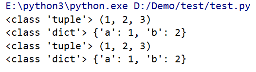

线程
我们通常依靠线程来解决需要同时执行多个代码流的要求，python通过一个内置模块提供了多线程的支持——threading模块
1 | import threading |
线程函数还可以在构建线程的时候传递参数
1 | import threading |

锁
多个线程同时访问一个变量会存在危险
1 | import threading |
套接字
仍然用socket函数创建套接字
1 | # server.py |
1 | # client.py |
单线程通信模型中，发送和接收会被阻塞，需要与多线程结合使用
1 | # server.py |
1 | # client.py |
多个客户机
1 | # server.py |
编码方式
1 | # Python 向 C++ 发送一个 char*(GBK) 类型的字符串 |